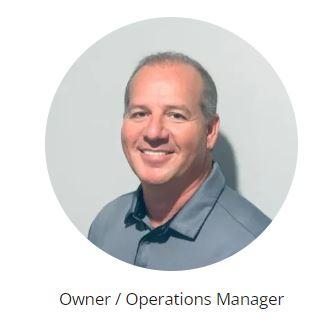

KIRBY C BILLIOT

Current & Past Employment (Complete Work History)
My Career Changes and Advancements since 1993…
1993 - Rig Fitter/Welder in marine repair/fabrication with welding rig setup.
1994 - Pipefitter / Welder Journeyman level SMAW, GTAW, GMAW and FCAW process.
1998 – Supervisor / Lead / Project Manager on new construction, fabrication and refinery TA projects.
1999 - Supervisor / Site Project Manager in chemical plants and refinery TA projects.
2006 - Corporate QA Manager over (9) Refinery maintenance site central / eastern locations.
2007 - Sr. Inspection Director over welding projects at Sunoco Refinery in Philadelphia, PA.
2012 - Capital Project Manager / Planner with project worldwide for numerous companies.
2012 - Sr. Field Specialist with UOP “A Honeywell Company” traveling worldwide and USA.
2014 - TA Inspection Lead Coordinator for Code Inspection and Project Quality Manager with New Industries.
2015 - Sr. Quality Manager at Dominion Cove Point LNG for Kiewit as Segment Quality & NDE Manager
2017 - TA QA Manager for UP Professional at Delek El Dorado to implement new Quality Management Plan.
2019 - Owner / Operations Manager of “Shell Key LLC” building Project Specific Mobile and Desktop Applications.
2021 - Construction Manager for Airswift at Enterprise Products in Mount Belveiu, Tx PDH2 Project.
2023 - Construction Manager for UOP at Venture GLobal in Amelia, LA PLNG and PLNG2 Project.
I'm a construction manager with over 30 years in the Oil and Gas Industry.
I'm married, live in Lafayette, Louisiana, I have 6 children (1) son and (5) daugthers.
My hobbies are creating mobile and desktop applications for businesses using Adalo Platform and Microsoft PowerApps.
I started my own business in 2019 and just recently started learning to become a code developer.